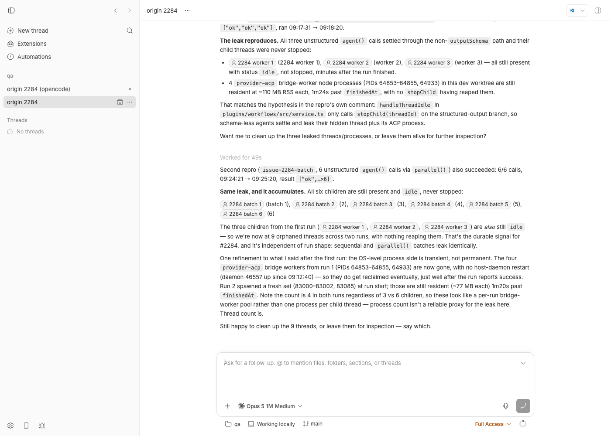

#2284 · Workflows plugin: finished unstructured worker threads are never stopped, leaking idle provider processes
Verdict: REPRODUCED · Root-cause confidence: high
1. TL;DR
A bb workflow (the built-in workflows plugin) runs each agent() call in a hidden child thread. When the child is a plain, unstructured call (no outputSchema), the plugin records its final text as the call result, marks the call succeeded, wakes the orchestrator, and then does nothing with the child thread: handleThreadIdle in plugins/workflows/src/service.ts never calls stopChild(threadId) on that path, while the structured-result path (submitStructuredResult) does. An idle hidden thread keeps its provider session loaded on the host daemon, and for ACP providers that session is one OS process per thread (opencode acp here, 500–850 MB RSS each). Nothing else in the plugin stops those children later either: run settlement, cancellation and plugin shutdown only stop calls that are still queued/running. The daemon's 30-minute idle reaper does not help: under default settings (providerSessionReaping experiment off) it only ever releases Codex sessions. I reproduced this on a dev instance with the exact provider from the issue: a 6-call batch limited to 2 concurrent agents held 6 live opencode acp processes (3.4 GB) while only 1–2 calls were running, and bb thread stop on a finished worker released its process immediately without touching the running ones, exactly as the reporter described. The omission has existed since the plugin was introduced (#733). PR #2090 is not a fix for this issue.
2. Claims vs findings
| Claim from the issue | Status | Evidence |
|---|---|---|
Unstructured workers are settled succeeded in handleThreadIdle and wake the orchestrator, but stopChild(threadId) is never called. | Verified | Code: service.ts#L1017-L1026. Unit test issue-2284-idle-worker-stop.test.ts fails on base: threads.stop is called 0 times for each of three unstructured workers (section 4, step 1). Host-daemon log of the live run shows 3 thread.start commands and no thread.stop. |
The code excerpt in the issue (from dist/server.js) reflects the real source. | Verified | Identical control flow in plugins/workflows/src/service.ts at base (structured branch at L1086-L1091 calls await stopChild(threadId); unstructured else at L1017-L1023 does not). |
| BB keeps provider connections alive while threads remain open, so completed worker threads retain their subprocess indefinitely. | Verified (with one nuance) | Live: finished workers' opencode acp processes stayed alive for as long as the batch kept running (runs 2 and 3). No plugin or server code path ever stops a succeeded call's child; the daemon reaper skips non-Codex providers by default (runtime.ts#L1007-L1017, experiments.ts#L34). Nuance: in my runs the leaked processes did die a few seconds after the run ended, because the origin thread's completion-notification turn made the daemon swap the (by then fully idle) environment runtime for a different skill catalog (section 5, "what finally killed them"). That can only happen once no worker is active, so it cannot relieve a batch in progress, and it is not a plugin action. |
With concurrency 4 and 40 completed tasks, 48 opencode acp processes (~560 MB RSS each, ~26 GB) were alive. | Verified at smaller scale | Run 2 (6 calls, maxConcurrentAgents=2): at 09:25:19 six processes, 3.1–3.4 GB total, with 5 succeeded + 1 running; per-process RSS 460–850 MB (run2-census-timeline.txt). Linear in completed calls: 48 × ~560 MB ≈ 27 GB is consistent. |
bb thread stop <thread-id> on the idle workers released the processes without disturbing the active workers. | Verified | Run 3: stopping finished worker thr_7zx3kkwyr6 mid-batch removed only its process; the other finished worker and the two running ones stayed (run3-stop-one-child.out). Server side, a stop of an idle thread is a runtime release, not an interruption (thread-lifecycle.ts#L1393-L1445). |
| PR #2090 "adds host-daemon idle session reaping with a 30-minute timeout". | Partially accurate | The 30-min/5-min reaper already exists at base (app.ts#L65-L66); #2090 only removes the experiment gate so non-Codex restorable sessions are eligible. The reporter's conclusion stands: a 30-minute sweep cannot help a batch that exhausts RAM in minutes. |
Proposed fix: call await stopChild(threadId) in handleThreadIdle when settling an unstructured task. | Verified sufficient for the reported path; one more gap | With that change the repro test passes and the plugin suite (226 tests) stays green (section 6). The structured fallback path (worker returned valid JSON as text instead of calling bb_workflow_result, L959-L969) has the same omission and needs the same call; the issue does not mention it. |
3. Environment
- bb monorepo at
494f66526913557ab076e048218236f0a6610927(version 0.39.0, branch main as of 2026-08-24).git log 494f66526..origin/main -- plugins/workflowsis empty: not fixed upstream. - macOS 26.5.2 (Darwin 25.5.0, Apple Silicon, 14 cores, 36 GB). Node v22.23.1, pnpm 9.15.0.
- Providers: opencode 1.18.10 (
acp-opencode, modelopencode/big-pickle, reasoningmedium), Claude Code 2.1.241 (origin thread of runs 1–2), codex-cli 0.149.1, pi 0.84.2. - Dev instance from this worktree via
scripts/bb-dev-app current: app:13252, server:21252, host daemon:29252, data dir~/.bb-dev/bb-machines-HOST.getbb.app-checkouts-bb-.claude-worktrees-wf_846839f8-f8a-2-bbe8290c3b26(deleted after the investigation). Experiments at default:{"providerSessionReaping":false,…}(fromGET /api/v1/system/config). - Workflows plugin settings: defaults except
maxConcurrentAgents=2for runs 2 and 3 (set withPUT /api/v1/plugins/workflows/settings).
4. Minimal reproduction
Step 1 — unit level (no provider needed): the plugin never stops an unstructured worker
- Copy
issue-2284-idle-worker-stop.test.tstoplugins/workflows/src/and run it from the repo root:pnpm -C plugins/workflows exec vitest run src/issue-2284-idle-worker-stop.test.ts
It builds the realcreateWorkflowServiceon an in-memory plugin DB (createFakePluginHostfrom@get-bb/plugin-sdk/testing), starts a run with three sequentialagent()calls, feeds each spawned child an idle event with output"result N", and countsthreads.stopcalls per child.expected: each finished worker gets exactly one threads.stop actual (base 494f66526): ❯ src/issue-2284-idle-worker-stop.test.ts (3 tests | 2 failed) × stops an unstructured worker as soon as its call is settled AssertionError: expected +0 to be 1 // stopsFor(harness, "child-1") stays 0 × stops a structured worker settled via the freeform JSON fallback AssertionError: expected +0 to be 1 ✓ control: a worker that submits bb_workflow_result IS stopped (existing behavior)Full output:repro-test-base.log. The control test shows the structured tool path already stops its worker, pinning the asymmetry.
Step 2 — live: one leaked opencode acp process per finished call
- Start a dev instance from a checkout at
494f66526and note its URLs/data dir (scripts/bb-dev-app current, thenscripts/bb-dev-app env). Make sureopencodeis on PATH so theacp-opencodeprovider is listed (pnpm bb:dev provider list). The workflows plugin ships disabled; switch it on and lower the per-run concurrency so the batch is larger than the concurrency:BB_SERVER_URL=http://localhost:21252 bash 2284/repro/plugin-ctl.sh on workflows curl -s -X PUT $BB_SERVER_URL/api/v1/plugins/workflows/settings -H 'content-type: application/json' \ -d '{"values":{"maxConcurrentAgents":"2"}}' - Create a scratch git repo and a project on it (host id from
pnpm bb:dev machine list --json), then spawn one cheap origin thread in that project (a workflow needs an origin thread with an environment):mkdir -p /tmp/bb-2284-qa && git -C /tmp/bb-2284-qa init -q && touch /tmp/bb-2284-qa/README.md \ && git -C /tmp/bb-2284-qa add -A && git -C /tmp/bb-2284-qa -c user.name=qa -c user.email=qa@example.com commit -qm init curl -s -X POST $BB_SERVER_URL/api/v1/projects -H 'content-type: application/json' \ -d '{"name":"qa","source":{"type":"local_path","path":"/tmp/bb-2284-qa","hostId":"<host id>"}}' pnpm bb:dev thread spawn --project <project id> --provider acp-opencode --model opencode/big-pickle \ --permission-mode full --title "origin 2284" --prompt "Reply only with ok." --json # note the thread id pnpm bb:dev thread wait <origin thread id> - Start the batch workflow (
batch-workflow.js: six unstructuredagent("Reply only with the word ok.")calls onacp-opencodeinsideparallel()) through the plugin CLI endpoint — the same path asbb workflows run --scriptfrom inside a thread — and start a 3-second process census next to it:export BB_SERVER_URL=http://localhost:21252 ORIGIN_THREAD=<origin thread id> PROJECT_ID=<project id> bash 2284/repro/run-workflow.sh 2284/repro/batch-workflow.js # → {"exitCode":0,"stdout":"{\"runId\":\"wfr_066a2bfe-05bf-4907-a86e-756005690469\",\"name\":\"issue-2284-batch\",\"status\":\"queued\"}\n"} bash 2284/repro/census-loop.sh wfr_066a2bfe-05bf-4907-a86e-756005690469 run2-census-timeline.txt 3 150census.shlists every liveopencode acpprocess with RSS and theBB_THREAD_IDthe daemon put in its environment (macOSps -E). - Compare the census with the run's call counters at the same instant.
expected: live opencode processes == calls still RUNNING (≤ 2) actual (2284/repro/run2-census-timeline.txt): === 09:25:19 run: running calls={"total":6,"queued":0,"running":1,"succeeded":5,"failed":0,"cancelled":0} 83691 499536 00:57 thr_bmn6hk7iwf opencode acp 83699 491104 00:57 thr_5ydc7srqsd opencode acp 84676 602032 00:46 thr_2wu7iq3cqq opencode acp 84847 645072 00:45 thr_avb9qm9vun opencode acp 86074 463408 00:34 thr_ggpgqttx3h opencode acp 86198 468224 00:34 thr_qvjnz4b6ei opencode acp total: 6 process(es), 3095 MB RSSFive calls are finished (their rows in the plugin DB aresucceededwithfinished_atset —run2-workflow-calls.txt) and their threads areidle/hidden(run2-threads.txt), yet all six agent processes are resident. The host-daemon log for the whole session contains onlythread.startcommands, never athread.stop. - (The reporter's workaround.) Run 3 repeats the batch and, as soon as two calls have succeeded while two are running, stops one finished worker with the CLI (
stop-one-child.sh):09:28:06 run status: succeeded=2 running=2; stopping finished worker thr_7zx3kkwyr6 --- census BEFORE stop: 4639 632320 00:17 thr_7zx3kkwyr6 opencode acp ← finished (succeeded) 4764 627024 00:15 thr_utph6c3kdc opencode acp ← finished (succeeded) 6752 336784 00:01 thr_qzdenzmj3p opencode acp ← running 7065 47824 00:00 thr_32ugrpy25v opencode acp ← running Thread thr_7zx3kkwyr6 stopped --- census AFTER stop (09:28:09): 4764 626768 00:18 thr_utph6c3kdc opencode acp ← still leaked 6752 775104 00:04 thr_qzdenzmj3p opencode acp 7065 564736 00:03 thr_32ugrpy25v opencode acp
bb thread stopon an idle thread is a pure runtime release, so the stopped worker's process is gone and the running workers are untouched; the other finished worker stays leaked because nothing asks for it to be released.

Repro files: 2284/repro/ (workflow scripts, helper shell scripts, the vitest file, census timelines for all three runs, plugin-DB and thread-table dumps, proposed-fix diff).
5. Root cause
The omission. handleThreadIdle is the only place an unstructured call is settled. Its else branch records the worker's final text and wakes the waiter, and returns without releasing the child thread (service.ts#L914-L1026):
} else {
settleCall(db, {
id: call.id,
status: "succeeded",
result: output ?? "",
error: null,
});
}
wakeCall(call);
} // ← no stopChild(threadId)
Every terminal path for a structured call does release the worker: submitStructuredResult (L1086-L1095) and the repair-exhausted / correction-failed branches of handleThreadIdle (L984-L988, L1012-L1016). Two paths do not: the unstructured else above, and the structured fallback that accepts valid JSON from the worker's plain text (L959-L970). git log -S stopChild shows the asymmetry has been there since the plugin landed in #733 (57a027724); the only later change (#826, ef8c867a6) removed a stall watchdog that used to stop stalled workers.
Why nothing cleans up later. Run-level cleanup only targets calls that are still open: settleRunAndStopOutstanding stops the children of settleRun's returned rows, which are queued/running only (service.ts#L1206-L1220, data.ts#L343-L372); stop(runId) uses activeChildThreadsForRun, same filter (data.ts#L773-L783); shutdown/recovery uses recoverInterruptedRuns, also running only. A child whose call already reads succeeded is invisible to all of them.
Why an idle hidden thread costs a whole process. The server keeps a thread's runtime loaded after its turn; only an explicit stop releases it (stopThreadForCurrentState → releaseIdleThreadRuntime → daemon thread.stop {intent:"release"}, thread-lifecycle.ts#L1393-L1473). In the ACP bridge each bb thread owns one spawned agent process (sessionsByBbThreadId, bridge.ts#L202-L203; release path releaseSession → connection.kill(), L2088-L2104). Claude Code and Pi are also one process per thread. The daemon's periodic reaper (every 5 min, sessions idle ≥ 30 min, app.ts#L65-L66) considers non-Codex sessions only when the providerSessionReaping experiment is on (runtime.ts#L1007-L1017), and it defaults to off (experiments.ts#L34) — that is issue #1604. So for the reporter's acp-opencode workers the only thing that ever releases a finished worker is a human running bb thread stop.
What finally killed the processes in my runs (not a fix, but worth knowing). In all three runs every leaked process disappeared 1–3 s after the run reached succeeded. The host-daemon log shows the cause each time (run2-devlog-at-end.txt): the plugin's completion notification starts a turn on the origin thread, which carries a different injected-skill catalog than the workers (workers get skills: [] from bb.agents.configure). The daemon's RuntimeManager then replaces the environment's runtime to switch catalogs, which is allowed only when the environment has no active runtime work, and shuts the old runtime down — taking the ACP bridge and all its idle agent subprocesses with it (runtime-manager.ts#L765-L784, "Removing unused injected skill staging directory" at 09:18:20 / 09:25:20 / 09:28:33). That swap cannot happen while any worker is still running, so it never relieves a batch in progress, and it is incidental: a workflow whose origin is not notified, or whose completion coincides with other activity in the environment, keeps the processes. It also explains why the reporter saw the leak "resolve" only by stopping threads manually.
Deeper issue. The plugin SDK has no "this worker is done, release it" primitive, and the server keeps sessions of hidden plugin-owned threads loaded with the same policy as user-visible threads. The workflows plugin therefore has to remember to stop every child itself, and it forgot the most common path. A server-side policy (release the runtime of a hidden, plugin-originated thread as soon as it goes idle, unless its owner keeps it) would remove the class of bug; that is a larger change than this issue needs.
6. Proposed fix (first principles)
Stop the worker on the two settle paths that forget it. Minimal patch against base (proposed-fix.diff):
--- a/plugins/workflows/src/service.ts
+++ b/plugins/workflows/src/service.ts
@@ -966,6 +966,9 @@ export function createWorkflowService(
error: null,
});
wakeCall(call);
+ // The worker is finished; release its provider session so the host
+ // does not keep one idle agent process per completed call (#2284).
+ await stopChild(threadId);
return;
}
}
@@ -1021,6 +1024,11 @@ export function createWorkflowService(
result: output ?? "",
error: null,
});
+ wakeCall(call);
+ // Unstructured calls settle here and nowhere else: stop the finished
+ // worker so its provider process is released (#2284).
+ await stopChild(threadId);
+ return;
}
wakeCall(call);
}
Verification: with the patch applied, the repro test passes (3/3, repro-test-with-fix.log) and the whole workflows plugin suite passes (14 files, 226 tests, workflows-suite-with-fix.log). The patch was reverted afterwards; the test file is left in the worktree for the fix PR to adopt.
What to watch: wakeCall must stay before stopChild so the orchestrator continues while the release round-trips to the daemon (the handler task is tracked in handlerTasks, so shutdown still awaits it). stopChild tolerates a thread that is already gone (isMissingThread) and dedupes concurrent stops, so calling it from the idle handler cannot double-stop the structured-tool path (submitStructuredResult already stopped that worker; its later idle event hits the call.resultJson !== null branch, which does not call it again). Stopping an idle thread is a release, not an interruption, so the worker's timeline and final output remain readable for bb workflows history. One behavioral change: a finished worker can no longer be "talked to" cheaply (its session is unloaded, resuming restarts the agent), which is the intended trade-off. Keep the workers' sessionRestorable semantics in mind if someone later adds a "retry last call in the same thread" feature. Also consider a belt-and-braces stopChildren of all children when a run settles (not only queued/running), so a future settle path cannot reintroduce the leak.
7. PR review
#2090 · Graduate idle provider session reaping (ScaleLeanChris, branch fix/provider-session-reaping-default, head d73645726)
What it changes. Removes the providerSessionReaping experiment (domain key, DB default, web/mobile/desktop settings UI, docs, fixtures), removes the server's /internal/runtime-policy endpoint and the daemon's getRuntimePolicy, makes the daemon's 30-minute reaper consider every provider session that reports sessionRestorable (Codex keeps its legacy thread-scoped fallback), keeps the open-work guards (backgroundWorkState.hasOpenThreadWork, adapter hasOpenThreadWork), and bumps HOST_DAEMON_PROTOCOL_VERSION 146 → 147. 31 files, +34/−241. It claims Fixes #1604; the reporter of #2284 commented on it but it is not linked as a fix for #2284.
Does it address this issue's root cause? No. It does not touch plugins/workflows. At best it turns "never released" into "released 30–35 minutes after the worker went idle", and only for ACP agents whose bridge reports sessionRestorable (ACP sets it from the agent's session/load support, bridge.ts#L2006; whether opencode acp advertises it was not verified here). A 40-task batch at concurrency 4 finishes its first 36 idle workers in far less than 30 minutes, so RAM is exhausted before the first sweep could act. The reporter's assessment in the issue is correct.
Findings.
| Where | Severity | Finding |
|---|---|---|
packages/host-daemon-contract/src/protocol.ts:118 | High | Bumps the protocol to 147, but main is already at 164 (base 494f66526). The branch is 82 commits behind (merge base c942421a4) and git merge-tree reports content conflicts in runtime.ts, runtime.process-lifecycle.test.ts, protocol.ts and contract.test.ts (GitHub: mergeable: CONFLICTING). After a rebase the bump must become 165 with a fresh changelog comment, and the runtime diff must be re-derived against the post-#2325 provider-plugin runtime, not just conflict-resolved. |
packages/agent-runtime/src/runtime.ts (reaper gating) | Medium | Behavior change without an off switch: every restorable Claude Code / Pi / ACP session is now unloaded after 30 idle minutes for every installation, and the PR deletes the only knob. #1604's own report suggested flipping the default rather than deleting the setting. Silent for users who rely on warm sessions; at minimum the release note / docs should say so, and a config knob (not an "experiment") to disable or tune the window would be prudent. |
packages/domain/src/experiments.ts + experimentsSchema (strict key enum) | Medium-low | Removing the key makes PUT /api/v1/settings/experiments reject any client that still sends providerSessionReaping (z.record over experimentKeySchema). The web app is served by the same server so it is fine; an older installed mobile app build (separately released) sending the key will get 400 on every experiments save until updated. Reading persisted rows is safe (getExperiments filters by known keys). |
apps/host-daemon/src/app.ts / server-client.ts | OK | Removing /internal/runtime-policy together with the protocol bump is correct: an older daemon is forced to update instead of looping on the missing endpoint. |
| Tests | OK on its own base | Checked out in my worktree and ran pnpm exec turbo run test --filter=@bb/agent-runtime --filter=@bb/host-daemon --filter=@bb/host-daemon-contract: 7 tasks successful (pr-2090-tests.log). The added lifecycle regression ("reaps a restorable non-Codex session") is meaningful. Nothing in the PR exercises a hidden workflow worker or the burst scenario of #2284. |
| Layering | OK | Policy stays where it was (daemon reaper, server no longer distributes a toggle). No casts or unknown smuggling introduced. |
Verdict: REQUEST CHANGES — as a #1604 change it needs a rebase onto current main, a protocol bump to 165, and a decision about an opt-out; as a response to #2284 it should not be considered at all. #2284 needs the one-line plugin fix in section 6.
8. Related issues
- #1604 — Idle agent processes are never reclaimed for non-Codex providers (the daemon-level half of this problem; report at 1604.html). Even with #1604 fixed, #2284 still leaks for up to 30 minutes per worker.
- #1573 / #1584 — the manual "release" stop intent that
bb thread stopuses on an idle thread; it is what the workaround and the proposed fix rely on. - #1131 — event-loop stalls that memory pressure from retained agents makes worse.
- #733 (plugin introduced with this asymmetry), #826 (removed the stall watchdog that used to stop stalled workers), #1104 (structured fallback settlement — the second path that forgets to stop).
- Side observation, not filed: the daemon's skill-catalog runtime swap silently unloads every idle session in an environment (including a user's idle visible thread) whenever a thread with a different catalog starts there; hidden workflow workers and their origin thread always have different catalogs, so each workflow run swaps the origin's session out and back. Worth its own look if session warmth matters.
9. Appendix
Commands run (in order)
gh issue view 2284 --repo get-bb/bb --json ... # issue text, no comments
pnpm install --frozen-lockfile --prefer-offline; pnpm exec turbo run build
pnpm -C plugins/workflows exec vitest run src/issue-2284-idle-worker-stop.test.ts # fails on base
git fetch origin main; git log 494f66526..origin/main -- plugins/workflows # empty
gh pr view 2090 --json ...; gh pr diff 2090 > 2284/pr-2090.diff
scripts/bb-dev-app current; scripts/bb-dev-app env
pnpm bb:dev provider list --json; pnpm bb:dev machine list --json; pnpm bb:dev project list --json
curl $BB_SERVER_URL/api/v1/system/config # experiments.providerSessionReaping=false
bash 2284/repro/plugin-ctl.sh on workflows
bash 2284/repro/run-workflow.sh 2284/repro/leak-workflow.js # run 1: wfr_91201162-…
bash 2284/repro/wait-for-run.sh wfr_91201162-…; bash 2284/repro/census.sh (mid-run and after)
sqlite3 <data>/bb.db "select id,status,provider_id,visibility,title from threads"
sqlite3 <data>/plugins/workflows/data.db "select call_index,status,child_thread_id,… from workflow_calls where run_id=…"
curl -X PUT $BB_SERVER_URL/api/v1/plugins/workflows/settings -d '{"values":{"maxConcurrentAgents":"2"}}'
bash 2284/repro/run-workflow.sh 2284/repro/batch-workflow.js # run 2: wfr_066a2bfe-…
bash 2284/repro/census-loop.sh wfr_066a2bfe-… run2-census-timeline.txt 3 150
pnpm bb:dev thread spawn --provider acp-opencode --model opencode/big-pickle … # cheap origin for run 3
bash 2284/repro/run-workflow.sh 2284/repro/batch-workflow.js # run 3: wfr_66ae9e12-…
bash 2284/repro/stop-one-child.sh wfr_66ae9e12-… # bb thread stop on a finished worker
doobie --headless < 2284/repro/screenshot-origin.js # assets/2284-origin-thread.png
pnpm dev:stop
(apply proposed-fix.diff) pnpm -C plugins/workflows exec vitest run # 226 passed; then git checkout -- service.ts
git fetch origin pull/2090/head:pr-2090; git merge-tree --write-tree 494f66526 pr-2090 # 4 CONFLICTs
git checkout pr-2090; pnpm install; pnpm exec turbo run test --filter=@bb/agent-runtime --filter=@bb/host-daemon --filter=@bb/host-daemon-contract
git checkout worktree-wf_846839f8-f8a-2; pnpm install; rm -rf <data dir> /tmp/bb-2284-qa
Run 1 (sequential, 3 calls) — census while call 3 was running
PID RSS_KB ELAPSED BB_THREAD_ID COMMAND 65323 847552 00:48 thr_s44tzchsc5 opencode acp ← call 0 succeeded 09:17:58 65876 656528 00:21 thr_zciq2rj2ua opencode acp ← call 1 succeeded 09:18:09 66895 588464 00:10 thr_ixm4x5q5zy opencode acp ← call 2 running total: 3 process(es), 2043 MB RSS
Run status afterwards: run-final-status.json ("result":["ok","ok","ok"]). Host-daemon RPC command types for the session (from dev.log): 4 host.read_file, 3 thread.start, 1 provider.list_models — no thread.stop.
Run 2 — dev.log at the moment the processes vanished
[09:25:20] DEBUG: [host-daemon] Online host RPC {"commandType":"host.read_file","errorCode":"ENOENT",…}
[09:25:20] DEBUG: [host-daemon] Removing unused injected skill staging directory {"catalogHash":"5b68f779…","stagingRootPath":"…/runtime/global-skills"}
[09:25:20] DEBUG: [host-daemon] Using cached host artifact {"cacheDir":"…/plugin-host-artifacts/provider-claude-code",…}
The same three lines appeared at 09:18:20 (run 1) and at the end of run 3 (origin on opencode): the origin's notification turn starts, ensureCompatibleEntry sees a different skill catalog on an environment with no active work, replaceEntryForSkillCatalog shuts the old runtime down (and its ACP agent subprocesses with it), and the new runtime launches the origin's provider bridge.
PR 2090 merge-tree against base
CONFLICT (content): Merge conflict in packages/agent-runtime/src/runtime.process-lifecycle.test.ts CONFLICT (content): Merge conflict in packages/agent-runtime/src/runtime.ts CONFLICT (content): Merge conflict in packages/host-daemon-contract/src/protocol.ts CONFLICT (content): Merge conflict in packages/host-daemon-contract/test/contract.test.ts
Repro test (inline)
// Repro for get-bb/bb#2284: a workflow worker that finishes an UNSTRUCTURED
// agent() call (no outputSchema) is settled as `succeeded` in
// handleThreadIdle, but the plugin never calls `threads.stop` for it, so the
// hidden worker thread keeps its provider process alive until something else
// (run cancellation, plugin shutdown, or the daemon's idle reaper) stops it.
//
// Structured calls that come back through `bb_workflow_result`
// (submitStructuredResult) DO call stopChild; this test pins the gap.
import { createFakePluginHost } from "@get-bb/plugin-sdk/testing";
import { afterEach, describe, expect, it } from "vitest";
import { getCall, getRunRequired, migrations } from "./data.js";
import { createWorkflowService } from "./service.js";
import { DEFAULT_WORKFLOW_SETTINGS } from "./settings.js";
async function eventually(assertion: () => void | Promise<void>, timeoutMs = 4_000): Promise<void> {
const deadline = Date.now() + timeoutMs;
while (true) {
try { await assertion(); return; }
catch (error) { if (Date.now() >= deadline) throw error; await new Promise((r) => setTimeout(r, 10)); }
}
}
function source(body: string, name: string): string {
return `export const meta = { name: ${JSON.stringify(name)}, description: "issue 2284" };
${body}`;
}
function setup() {
let childCount = 0;
const { bb, harness } = createFakePluginHost({
pluginId: "workflows",
sdk: {
threads: {
get: async ({ threadId }) => ({ id: threadId, environmentId: "environment-1", providerId: "acp-opencode",
status: threadId === "origin" ? "idle" : "active" }) as never,
output: async () => ({ output: null }),
defaultExecutionOptions: async () => ({ model: "gpt-test", reasoningLevel: "medium", permissionMode: "full",
serviceTier: "default", source: "default" }),
spawn: async () => { childCount += 1; return { id: `child-${childCount}` } as never; },
send: async () => ({ ok: true }),
stop: async () => ({ ok: true }),
},
providers: {
list: async () => [{ id: "acp-opencode", displayName: "OpenCode", logoUrl: null, available: true,
capabilities: { supportsThreadArchive: true, supportsThreadRename: true, supportsServiceTier: true,
supportsNativeUserQuestion: false, supportsFork: true, permissionModes: ["full"] }, composerActions: [] }],
models: async () => ({ providers: [], models: [{ id: "gpt-test", model: "gpt-test", displayName: "GPT Test",
description: "test", supportedReasoningEfforts: [{ reasoningEffort: "medium", description: "test" }],
defaultReasoningEffort: "medium", isDefault: true }], selectedOnlyModels: [], modelLoadError: null }),
},
environments: { get: async () => ({ id: "environment-1", projectId: "project-test", hostId: "host-1", path: "/workspace" }) as never },
},
});
const db = bb.storage.database();
bb.storage.migrate(db, migrations);
const service = createWorkflowService(bb, db, DEFAULT_WORKFLOW_SETTINGS);
return { harness, db, service, childCount: () => childCount };
}
function stopsFor(harness: ReturnType<typeof setup>["harness"], threadId: string): number {
return harness.sdk.callsTo("threads.stop")
.filter(([input]) => (input as { threadId: string }).threadId === threadId).length;
}
describe("issue #2284: finished workers release their provider session", () => {
const harnesses: Array<ReturnType<typeof setup>["harness"]> = [];
afterEach(async () => { await Promise.all(harnesses.map((h) => h.dispose())); harnesses.length = 0; });
it("stops an unstructured worker as soon as its call is settled", async () => {
const test = setup(); harnesses.push(test.harness);
const run = await test.service.start({ projectId: "project-test", originThreadId: "origin",
source: source(`const a = await agent("one"); const b = await agent("two"); const c = await agent("three"); return [a, b, c];`, "issue-2284"),
args: null, resumedFromRunId: null });
const controller = new AbortController();
const worker = test.service.runWorker(controller.signal);
try {
for (const n of [1, 2, 3]) {
await eventually(() => expect(test.childCount()).toBe(n));
test.service.onThreadIdle(`child-${n}`, `result ${n}`);
await eventually(() => expect(getCall(test.db, run.id, n - 1)?.status).toBe("succeeded"));
// BUG: on 494f66526 this stays 0 for every unstructured worker.
await eventually(() => expect(stopsFor(test.harness, `child-${n}`)).toBe(1), 500);
}
await eventually(() => expect(getRunRequired(test.db, run.id).status).toBe("succeeded"));
} finally { controller.abort(); await worker; }
});
it("stops a structured worker settled via the freeform JSON fallback", async () => {
const test = setup(); harnesses.push(test.harness);
const run = await test.service.start({ projectId: "project-test", originThreadId: "origin",
source: source(`return await agent("give me json", { outputSchema: { type: "object", properties: { ok: { type: "boolean" } }, required: ["ok"] } });`, "issue-2284-structured-fallback"),
args: null, resumedFromRunId: null });
const controller = new AbortController();
const worker = test.service.runWorker(controller.signal);
try {
await eventually(() => expect(test.childCount()).toBe(1));
test.service.onThreadIdle("child-1", '{"ok": true}'); // valid JSON as plain text, no bb_workflow_result call
await eventually(() => expect(getRunRequired(test.db, run.id).status).toBe("succeeded"));
// BUG: the fallback-accepted branch also returns without stopChild.
await eventually(() => expect(stopsFor(test.harness, "child-1")).toBe(1), 500);
} finally { controller.abort(); await worker; }
});
it("control: a worker that submits bb_workflow_result IS stopped (existing behavior)", async () => {
const test = setup(); harnesses.push(test.harness);
await test.service.start({ projectId: "project-test", originThreadId: "origin",
source: source(`return await agent("give me json", { outputSchema: { type: "object", properties: { ok: { type: "boolean" } }, required: ["ok"] } });`, "issue-2284-structured-tool"),
args: null, resumedFromRunId: null });
const controller = new AbortController();
const worker = test.service.runWorker(controller.signal);
try {
await eventually(() => expect(test.childCount()).toBe(1));
await expect(test.service.submitStructuredResult("child-1", { ok: true })).resolves.toEqual({ ok: true });
expect(stopsFor(test.harness, "child-1")).toBe(1);
} finally { controller.abort(); await worker; }
});
});
(The file in 2284/repro/ is the exact, formatted version that was run.)
Cleanup performed
pnpm dev:stop in the worktree; ports 13252/21252/29252 verified free with lsof; dev data dir under ~/.bb-dev/ and /tmp/bb-2284-qa deleted; doobie browsers stopped; worktree returned to 494f66526 on branch worktree-wf_846839f8-f8a-2 with only the untracked repro test file; local pr-2090 branch deleted. The user's packaged bb (:38886/:38887, ~/.bb) and the :38930 server were not touched.